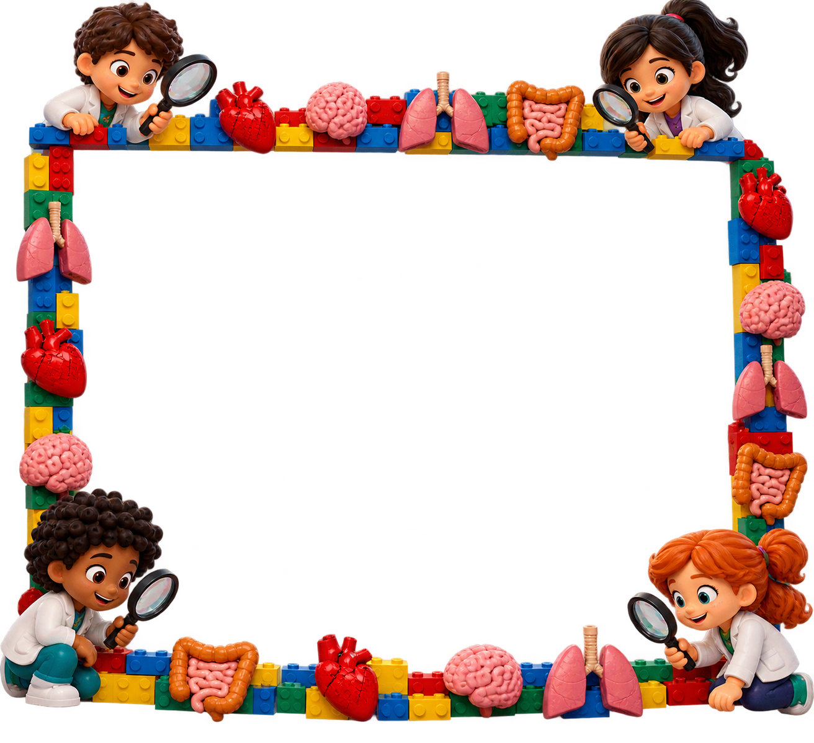
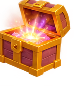

Encontre tesouros reais, escaneie os códigos e revele descobertas virtuais pela câmera!

MISSÃO MUDIEncontre os 25 tesouros científicos!
🎒 Missão em família
1. Procure as estações do MUDI seguindo as pistas. 2. Escaneie o QR Code encontrado. 3. Veja o tesouro virtual na câmera e responda à pergunta. 4. Colecione as 25 descobertas para desbloquear o vídeo e o baú final.
O responsável pelo evento deve imprimir e esconder os códigos das estações disponíveis. A câmera exige HTTPS ou localhost e autorização do visitante.
🗺️ Mapa de descobertas — 25 objetos
Os 25 espaços fazem parte da missão. Novos objetos serão liberados aos poucos.
COLEÇÃO MUDI25 descobertas científicas
Use a câmera para procurar o código no objeto físico. Não é necessário revelar o esconderijo exato no jogo.
🔐 Confirmar descoberta
Digite o código impresso no QR Code encontrado no MUDI.
📷 Câmera com moldura MUDI
Aponte para o QR Code da estação física
✨ Você encontrou a estação! Veja o objeto virtual sobre o ambiente.
Visualização com sobreposição de câmera — não há rastreamento espacial 3D
Vista 1/8
Caso a câmera não abra, o objeto continuará visível sobre o fundo ilustrado.
🏆 Família exploradora!
🎬 Assista ao vídeo especial de comemoração!

Vocês encontraram os 25 objetos!
Parabéns! Sua família encontrou todos os 25 tesouros científicos do MUDI!